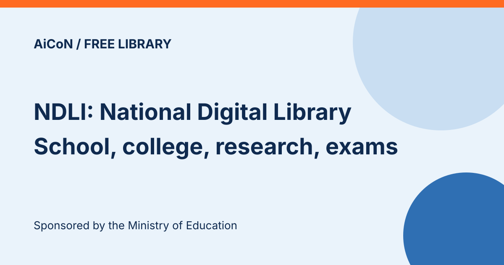

NDLI: India's free digital library for school, college, research and exam resources
The National Digital Library of India (NDLI) is a single-window learning library sponsored by the Ministry of Education under the National Mission on Education through ICT (NMEICT) and run from IIT Kharagpur's NDLI site. It brings together school, higher-education, research, career and exam resources, plus newspaper archives, judicial resources and patents. The NDLI Club page describes its resources as free to learn from.

What is inside?
- School Education: browse by board, level, subject and resource type
- Higher Education and Research: subjects, institutes, journals and more
- Career Development: exam-focused resources
- Cultural Archives, Newspaper Archives, Judicial Resources, Patents and Standards
Languages
The home page offers a language menu with 15 options: Assamese, Bengali, English, Gujarati, Hindi, Kannada, Malayalam, Marathi, Nepali, Odia, Punjabi, Sanskrit, Tamil, Telugu and Urdu. This is the site menu, so content for a given subject may not exist in every language.
NDLI Club
The NDLI Club is a community for educators, students and others. Its own page says members get access to a repository of free learning resources from NDLI and that both NDLI and the Club are Ministry of Education initiatives. Learn about the Club and follow its website link on the NDLI Club page.
A careful checklist
- Open the site from ndl.iitkgp.ac.in and check the address before you sign up.
- Pick the section that matches your need, for example School Education or Career Development.
- Filter by subject, language and resource type.
- Open the item and read the source's own terms before sharing or reusing it.
Frequently asked questions
Is it free?
The NDLI Club page describes the resources as free. Some items come from publishers or institutions, so check the item page.
Does the 15-language menu mean every item exists in every language?
No. The menu languages describe the interface. Check the language and access details of the item you need.
What changed since this post?
Official NDLI home and Club pages rechecked 12 October 2026. Confirmed the section list, 15-language menu and NMEICT/Ministry of Education sponsorship. Free learning resources is attributed to the Club page, not a promise of unrestricted access or reuse for every item. No content or user count is claimed. We did not register, log in or test individual resources.
Sources: NDLI home, NDLI Club. Checked 12 October 2026. This is an AiCoN explainer, not a government publication.